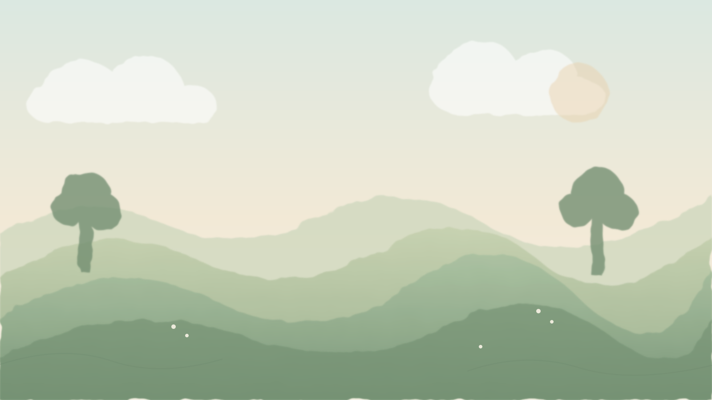
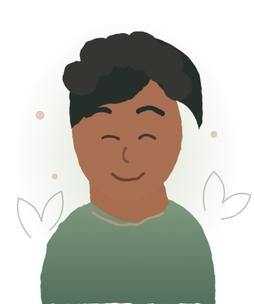
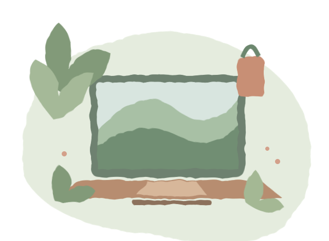
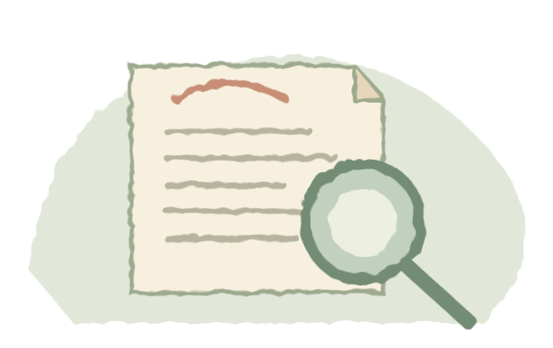
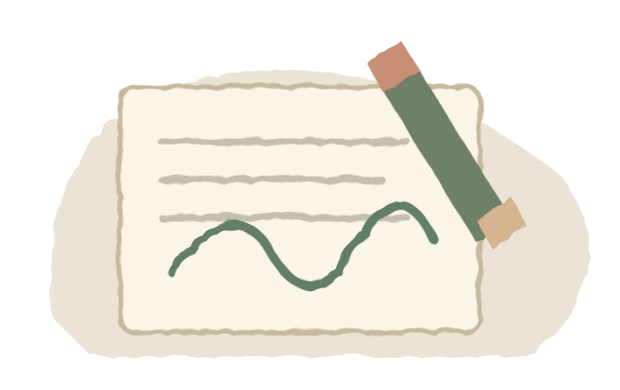
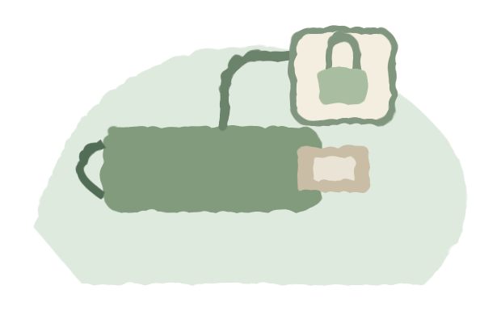
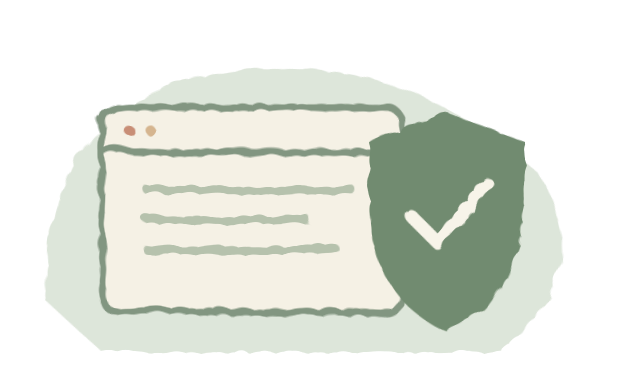
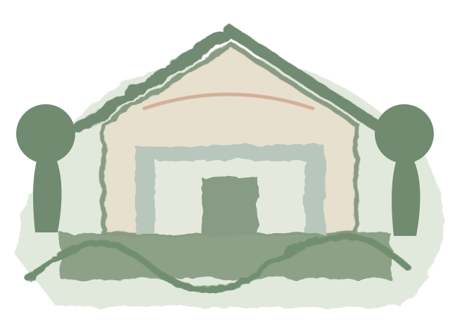
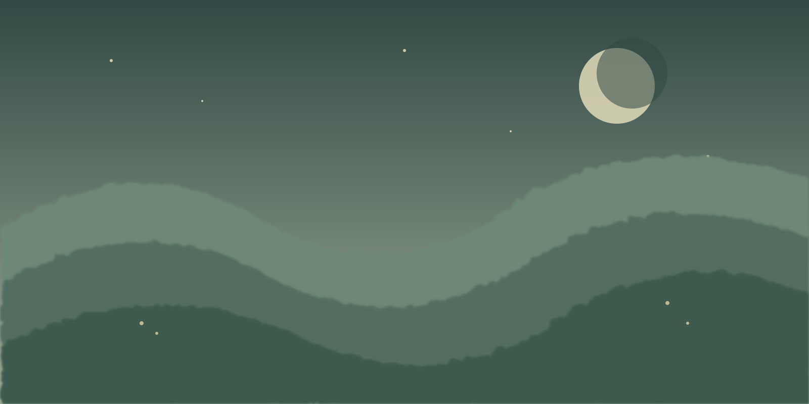

Programming
Writing clear, maintainable code.

Python Backend Developer
Hello, I'm Harish T. I build practical backend applications, useful automations and thoughtful digital solutions with Python.
Curious by nature. Developer by craft.

Python ✳ Flask ⌁ REST APIs ↗ a little creativityA little about me

A workspace for curious mindsI'm a Computer Science graduate and Python Backend Developer who enjoys turning ideas into reliable software.
I work with Python, Flask, REST APIs, MySQL and automation technologies. My hands-on experience includes OCR-based document search, web applications, device authentication and workflow-focused solutions.
I completed technical training at HAL Technical Training Institute as an Apprentice Trainee at Hindustan Aeronautics Limited.
“Build with purpose. Keep learning. Make every detail count.”
The toolkit
A practical collection of technologies and concepts I use across backend development and automation.
Writing clear, maintainable code.
Building application logic and APIs.
Working with structured application data.
Turning scanned content into searchable information.
Building, managing and creating.
Strong foundations for dependable software.
Selected work
A few projects that reflect my interest in backend systems, document intelligence and practical automation.

01 / FEATUREDOCR · Document intelligence
OCR-based document processing & search system
A system for reading and searching information in old documents. The workflow processes uploaded PDFs, converts pages into images, extracts text and image metadata using Tesseract and Kraken OCR, then enables metadata-based search and highlights matching text on displayed page images. Developed for an Indian defence Navy use case.

02Web application · HAL
Digital signature web application
A web-based digital signature solution developed for the HAL Helicopter Division, with a focus on application workflows and backend functionality.

03Authentication · Windows API
Hardware-based access control
A device-authentication system that reads a connected USB drive or dongle serial number and allows the application to open only when an authorized device is detected, using Windows APIs.

04Web development · HAL
Internal web-based project
A webpage developed for HAL, contributing to a digital workflow in an organizational environment.
The journey so far

A chapter in engineering and technology2025 — 2026
Hindustan Aeronautics Limited (HAL)
Completed structured technical training at HAL Technical Training Institute and contributed to practical web-based and software workflows.
June 2024
Computer Science & Engineering
Graduated with a CGPA of 7.40, building a foundation in programming, databases and software development.
How I can help
Backend logic and application features built with Python.
Lightweight web applications tailored to a clear workflow.
Structured endpoints and integrations for connected products.
Practical automation for repetitive, multi-step tasks.

The next chapter
I'm open to opportunities, collaborations and interesting projects. Tell me what you're working on.
thangakumarharish@gmail.com